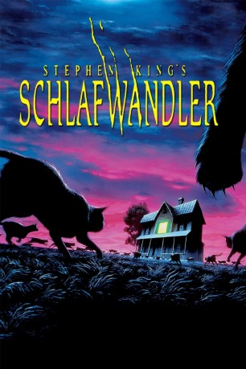
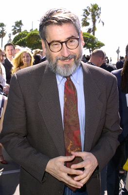
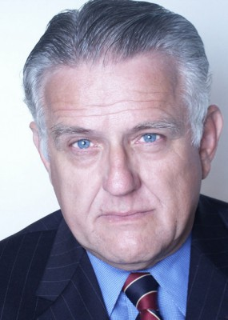

#11853 Schlafwandler
Alternativ: Sleepwalkers (Englischer Titel)
 
 IMDB-Wertung: 5.3 / 10
IMDB-Wertung: 5.3 / 10  Tomatometer: 25
Tomatometer: 25  Metascore: 38
Metascore: 38 
Charles und seine Mutter Mary sind Schlafwandler, vampirartige Wesen, die ihre Erscheinungsform fließend ändern können, ein inzestuöses Verhältnis miteinander haben und sich nur vor Katzen fürchten. In einem Dörfchen in Indiana suchen sie nach neuen Opfern: Charles freundet sich mit der hübschen Mitschülerin Tanya an. Beim ersten gemeinsamen Rendezvous entpuppt sich der vermeintliche Sunnyboy als reißendes Monster, dem Tanya nur mit allerletzter Kraft entfliehen kann. Dabei verletzt die Katze des Sheriffs Charles lebensgefährlich. In verzweifelter Wut entführt Mary die arme Tanya, doch ein Rudel Katzen sorgt dafür, daß der Schlafwandler-Spuk ein Ende hat.
Jahr: 1992
Dauer: 89 Minuten
FSK: 18
Land: USA Studio: Columbia PicturesTonspuren:
Untertitel: Deutsch,
Auflösung: 1080p (1920x1040) Größe: 10547 MB
Genre: Horror
Regisseur: Mick Garris
Drehbuch: Stephen King
Soundtrack: Nicholas Pike
Darsteller:
- Brian Krause als Charles Brady
 Mädchen Amick als Tanya Robertson
Mädchen Amick als Tanya Robertson Alice Krige als Mary Brady
Alice Krige als Mary Brady Jim Haynie als Sheriff Ira
Jim Haynie als Sheriff Ira- Cindy Pickett als Mrs. Robertson
 Ron Perlman als Captain Soames
Ron Perlman als Captain Soames Lyman Ward als Mr. Robertson
Lyman Ward als Mr. Robertson Dan Martin als Andy Simpson
Dan Martin als Andy Simpson Glenn Shadix als Mr. Fallows
Glenn Shadix als Mr. Fallows- Cynthia Garris als Laurie
- Monty Bane als Horace
-  John Landis als Lab Technician
- Joe Dante als Lab Assistant
 Stephen King als Cemetery Caretaker
Stephen King als Cemetery Caretaker- Clive Barker als Forensic Tech
- Tobe Hooper als Forensic Tech
-  Frank Novak als Deputy Sheriff
 Rusty Schwimmer als Housewife
Rusty Schwimmer als Housewife- Richard Penn als State Policeman
 Ernie Lively als Animal Control Officer
Ernie Lively als Animal Control Officer Bojesse Christopher als Crawford
Bojesse Christopher als Crawford- Lucy Boryer als Jeanette
- Stuart Charno als Police Photographer
- Diane Delano als Police
- Joey Aresco als Victor
- Michael Reid MacKay als 'Charles' Sleepwalker
- Charles Croughwell als 'Mary' Sleepwalker
 Mark Hamill als Lt. Jenkins (uncredited)
Mark Hamill als Lt. Jenkins (uncredited)- O. Nicholas Brown als Officer Wilbur
- Judette Warren als Carrie
- Karl Bakke als Police
- Roger Nolan als Stenta
- Donald Petersen als Boy with Ear Ache
- Hayden Victor als Little Girl at School Bus
- Karyn Sercelj als 'Mary' Sleepwalker
- Sparks als Clovis
- Norman Fessler als Theater Manager (uncredited)
Datei: X:\Person\Stephen King\Schlafwandler (1992, FSK18, 1920x1040).mkv seit 02.10.2019
Festplatte: HD Collection-7+mehr(A-Z)+Person
 Es gibt insgesamt 44 Filme in der Gruppe 'Person\Stephen King'
Es gibt insgesamt 44 Filme in der Gruppe 'Person\Stephen King'